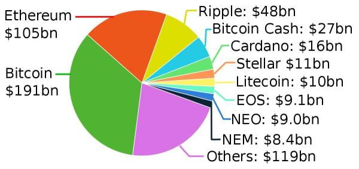

HOW DOES CRYPTOCURRENCY WORK?

Cryptocurrencies are exchanged from person to person on the web without a middleman, like a bank or government. It’s like the wild, wild west of the digital world. There’s no marshal to uphold the law.
Here’s what I mean: Have you ever hired a kid in your neighborhood to mow your lawn or watch your dog while you were out of town? Chances are, you paid them in cash. You didn’t need to go to the bank to make a formal transaction. That’s what it’s like to exchange cryptocurrencies. They are decentralized: No government or bank controls how they’re produced, what their value is, or how they’re exchanged.
As a result, cryptocurrencies are worth whatever people are willing to pay or exchange for them.
Now hang with me, people. We’re about to get techy! You store your cryptocurrency in a digital wallet—usually in an app or 
through the vendor where you purchase your coins. Your wallet gives you a private key—a unique code that you enter in order to digitally “sign off” on purchases. It’s mathematical proof that the exchange was legit.
Cryptocurrencies operate on what is called blockchain technology. A blockchain is like a really long receipt that keeps growing with each exchange. It’s a public record of all of the transactions that have ever happened in a given cryptocurrency.
What Can You Buy With Cryptocurrency?
Most people still see cryptocurrencies as an investment. But cryptocurrency spending could become popular as these currencies gain trust. There are online retailers, such as overstock.com, who accept cryptocurrencies. And of course, any two individuals who value the tokens can exchange them for goods or services.
4 THINGS TO KNOW BEFORE INVESTING IN CRYPTOCURRENCY
1. Cryptocurrencies are volatile. The value of cryptocurrencies goes through extreme ups and downs. In 2017, the value of Bitcoin swung between $900 and $20,000!2 Someone sneezes and the price drops! Investing in cryptocurrency is risky, to say the least. Of course, all investing carries a degree of risk. But you should always avoid unnecessary risks, especially when it comes to your hard-earned money. Don’t play poker with your financial future.
2. There are lots of unknowns.There’s still a lot that needs to be ironed out with how cryptocurrencies work.Nobody even knows who the founder of Bitcoin is! Relatively speaking, only a small percentage of people in the world understand the system and know how to operate it. Ignorance makes you vulnerable. I always advise people that if you can’t explain your investments to a 10-year-old, you have no business investing in them to begin with. You’re setting yourself up to do something stupid.
3. Cryptocurrencies can be used for fraudulent activity. People who want to remain anonymous and avoid regulation from banks or the government will use cryptocurrencies to make shady deals on the black market. Money laundering is also a problem in the crypto world. Now hear me on this: I’m not saying that everyone who uses cryptocurrency is a bad person. But I am saying that if someone wants to commit criminal activity and avoid being tracked, the crypto world is an ideal place for them.
4. Cryptocurrencies have an unproven rate of return. Trading in cryptocurrency is like gambling. Because it’s exchanged peer to peer without any tie to regulatory standards, there’s no pattern to the rise and fall of its value. You can’t predict changes or calculate returns like you can with growth stock mutual funds. There just isn’t enough data, or enough credibility, to create a long-term investing plan based in cryptocurrency.
SHOULD I INVEST IN CRYPTOCURRENCY?
Here’s the deal: If you’re out of debt, have an emergency fund that will cover three to six months of expenses, and you’re already investing 15% of your income in growth stock mutual funds—which are hundreds of times more secure than crypto—then you may make the choice to play around with cryptocurrencies.
But I want to warn you: When you invest in crypto, be prepared to say good-bye-o to your money. It’s not a good way to build wealth. There are thousands of millionaires who agree with me.
Don’t give in to stupid just because there’s a lot of hype. I’ve personally talked to people who have taken out a mortgage or cashed out their entire 401(k) early to invest in cryptocurrency! No, no, no! Don’t put it all on the line and risk your financial future, your retirement dreams, and your family’s well-being.
At some point in the future, cryptocurrencies might become legitimate and widely used. But for now, be safe and be smart.
INVEST WITH CONFIDENCE
Get-rich-quick schemes seem too good to be true because they are. The reality is, the road to building wealth is slow and steady. Millionaires don’t build wealth through risky investments like cryptocurrencies. In fact, in The National Study of Millionaires, we found that the number one wealth-building tool of millionaires is their workplace retirement plan, like a 401(k). If you’re looking for a proven plan to build wealth (and more advice on crypto), I encourage you to check out our SmartVestor program. These pros have been vetted by our staff at Ramsey Solutions and want to guide you through the process of investing.